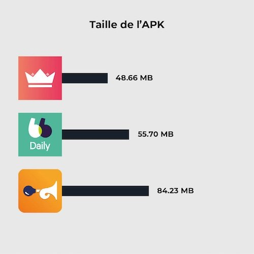
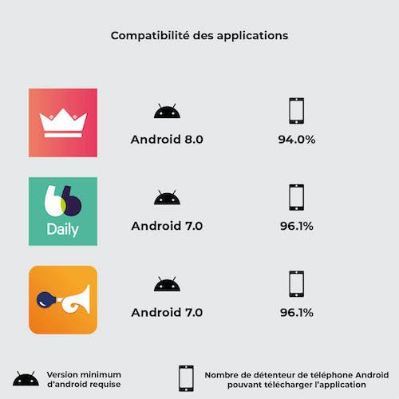
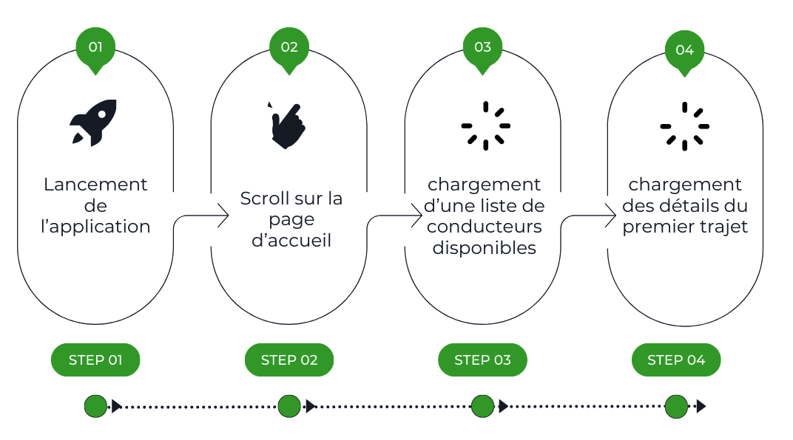
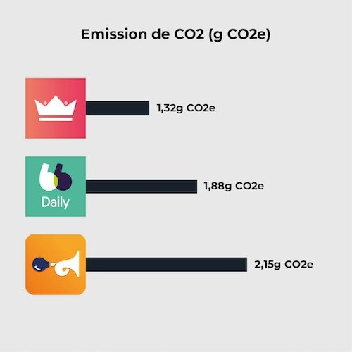
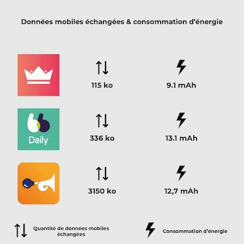

Le covoiturage au quotidien est une pratique qui permet de mettre en commun les impacts environnementaux liés aux transports en voiture. Il existe des applications qui permettent de mettre en relation les conducteurs et les passagers. Cependant, il ne faut pas que les économies réalisées pendant un trajet soient compensées par les impacts liés aux SI de ces services. Dans cet article, nous étudierons les pratiques d’écoconception de trois applications de covoiturage quotidien : BlaBlaCarDaily, Karos et Klaxit.
Méthodologie
Cette étude comparative des applications mobiles examine différents aspects, tels que la taille des fichiers APK (les fichiers d’installation des applications Android), la compatibilité des applications et les émissions de gaz à effet de serre (GES) provoquées par leur utilisation. Les résultats obtenus mettent en évidence des différences significatives entre les applications, soulignant ainsi l’intérêt de la mise en place d’une démarche d’écoconception.
Tout d’abord, Il faut savoir que la grande majorité de l’impact environnemental d’un smartphone est dû à sa phase de fabrication. En effet, une grande quantité d’énergie et de matériaux, parfois rares, sont nécessaires à la fabrication du produit. Par conséquent, pour réduire de manière efficace l’impact d’une application mobile, il est nécessaire de faire en sorte qu’elle ne pousse pas l’utilisateur à changer de téléphone pour obtenir une expérience utilisateur convenable. Cela passe par l’évaluation de plusieurs critères dont voici une liste non exhaustive :
– Compatibilité : une application doit être compatible avec l’ensemble des terminaux des utilisateurs (OS, résolution d’écran, etc.). Nous avons constaté que certaines applications étaient exclusivement conçues pour des versions plus récentes, ce qui limite leur accès pour les utilisateurs possédant des appareils plus anciens. Cette incompatibilité conduit souvent à un remplacement fréquent des appareils, ce qui peut entraîner un gaspillage des ressources naturelles et une augmentation des déchets électroniques.
– Utilisation de la batterie : l’usure de la batterie est une des causes matérielles qui provoquent la nécessité de devoir acheter un nouveau téléphone. Un des facteurs d’usure de celle-ci est le nombre de cycles de charges / décharges du téléphone. Il est donc nécessaire que l’utilisation de l’application ne nécessite pas trop d’énergie afin de ne pas accélérer la décharge de la batterie.
– Performance : ce critère correspond au temps de réponse de l’application. Premièrement, l’objectif d’une démarche d’écoconception est de permettre aux utilisateurs, qui ne souhaiteraient pas renouveler leur téléphone, d’avoir une expérience utilisateur agréable même sur de vieux appareils. En second lieu, un allongement du temps de chargement signifie donc une usure de la batterie plus rapide. Enfin, si le facteur limitant la performance est la qualité du réseau, les utilisateurs en nomadicité seront d’autant plus impactés.
– Taille de l’APK : cet indicateur provoque 2 impacts différents. Premièrement, une application avec une taille importante nécessite un échange de données plus important pour être installée ou mise à jour. Deuxièmement, un utilisateur qui souhaite conserver son téléphone longtemps peut être amené à devoir gérer des problèmes de manque de mémoire. En effet, la taille des logiciels et des applications va croissante (on parle d’obésiciel). Dans un objectif de l’encourager dans cette démarche, il est nécessaire que le stockage utilisé par l’application soit le plus réduit possible. Dans cet article, nous allons nous focaliser uniquement sur la taille de l’APK, mais une démarche d’éco-conception doit également être menée sur l’ensemble des données stockées sur le téléphone, comme le cache.
Lors d’une analyse d’impact environnemental chez Greenspector, nous examinons l’ensemble de ces points pour fournir des recommandations permettant à nos clients d’avoir une vue précise de leur situation et de réduire leur impact environnemental.
Comparatif de la taille des APKs
Tout d’abord, évaluons la taille de chaque application, une fois installées sur un Samsung Galaxy S9 (Android 11). Étant donné, qu’elles remplissent toutes les mêmes domaines fonctionnels, nous nous attendons à des tailles à peu près semblables. Cependant l’application Klaxit se démarque par son volume. Une telle différence peut avoir plusieurs origines. Par exemple l’application utilise plus de SDK externes, ou bien elle embarque plus de ressources (images, vidéos, etc.) non compressées.

| Application | Taille de l’APK |
| Karos | 48.66 MB |
| BlaBlaCarDaily | 55.70 MB |
| Klaxit | 84.23 MB |
Comparatif de la compatibilité des applications
Un autre critère essentiel que nous avons étudié est la compatibilité des applications avec différentes versions d’Android. Par exemple, une application qui ne serait pas compatible avec une version inférieure à Android 8 empêcherait 7,1% des détenteurs d’Android d’utiliser l’application.

| Application | Version minimum d’Android requise | Nombre de détenteur de téléphone Android pouvant télécharger l’application |
| Karos | Android 8.0 | 94.0% |
| BlaBlaCarDaily | Android 7.0 | 96.1% |
| Klaxit | Android 7.0 | 96.1% |
L’application Karos permet donc à 2.1% d’utilisateurs en plus d’utiliser leur service de covoiturage. Cette différence ne parait pas significative et pourtant, cherchons à calculer les émissions évitées par un support de Android 6.0 au lieu de seulement 7.0.
Selon l’ARCEP 37% des renouvellements de smartphone sont dus à un dysfonctionnement partiel (réel ou supposé) ce qui comprend les casses de composants non essentiels, l’usure de la batterie, la désuétude et enfin l’obsolescence logicielle.
Prenons pour hypothèse une répartition équitable de ces quatre raisons. Nous arrivons à un taux de renouvellement dû à l’OS (obsolescence logicielle) de 9.25%.
Toujours selon l’ARCEP, on estime qu’il y avait en France en 2021, 48.4 millions détenteurs de smartphone. Prenons pour hypothèse que chaque détenteur de smartphone ne possède qu’un seul appareil. Par ailleurs supposons que 10% des Français ont besoin d’accéder à un service de covoiturage quotidien (hypothèse forte). Cela revient à économiser la fabrication de N smartphones :
N = 10% * 9.25% * 2.1% * 48.4 M
N = 9.4 k Selon les données de notre modèle d’évaluation environnementale, l’ensemble du cycle de vie d’un smartphone sans la phase d’usage émet en moyenne 59 kgCO2eq. Les émissions ainsi évitées représentent :
Etot = 9.4 * 59 = 554 T CO2 eq Comparatif des émissions de GES
a) Explication de notre méthodologie
Pour évaluer les émissions de gaz à effet de serre des applications, nous avons suivi une méthodologie rigoureuse basée sur la collecte de métriques pendant le parcours automatisé sur un téléphone réel : la consommation d’énergie de l’appareil, la quantité de données mobiles échangées et le nombre de requêtes HTTP effectuées. Grâce à ces données mesurées et le modèle d’évaluation d’impact environnemental Greenspector Studio, nous sommes en mesure de réaliser une estimation des émissions de CO2. Une explication plus précise du modèle utilisé est détaillée dans cet article : https://blog.greenspector.com/fr/methodologie-calcul-empreinte-environnementale/
Hypothèses retenues pour l’évaluation environnementale
- Localisation des utilisateurs : 100% en France
- Localisation des serveurs : 100% en France
- Appareils utilisés : smartphones uniquement
b) Explication du parcours
Ces mesures ont été réalisées sur la base de parcours utilisateur que nous avons découpés en petites étapes. Nous nous situons du point de vue d’un passager souhaitant se rendre quotidiennement du centre de Nantes jusqu’à Carquefou. Ces parcours ont été établis de sorte que les mêmes fonctionnalités soient évaluées, à savoir “lister les conducteurs disponibles” et “avoir des détails sur un trajet en particulier”. Ainsi chaque parcours est constitué de tout ou partie de ces étapes :

- Lancement de l’application
- Scroll sur la page d’accueil
- Chargement d’une liste de conducteurs disponibles
- Chargement des détails du premier trajet
Ces différentes étapes nous permettent d’avoir une vue d’ensemble sur plusieurs éléments généralement présents dans une application mobile, comme une page défilante, un élément complexe (l’intégration d’une carte du trajet). L’étape de lancement est également très importante car elle peut nous fournir des informations essentielles, par exemple sur le stockage en cache des données ou le temps de lancement de l’application.
Dans l’objectif d’avoir la mesure la plus fiable possible, nous écrivons un script GDSL pour automatiser l’exécution de 5 séries de tests identiques. Le GDSL est un langage développé par Greenspector qui permet de scripter des parcours de tests à lancer sur des smartphones Android et iOS. Pour plus d’informations, voir notre article dédié.
Contexte de mesure
- Samsung Galaxy S10, Android 10
- Réseau : Wi-Fi
- Luminosité : 50%
- Tests réalisés sur au moins 3 itérations pour fiabiliser les résultats
C) Résultats
Après avoir exécuté les mesures, l’analyse des résultats a permis d’établir une évaluation de l’empreinte carbone du parcours retenu pour les trois applications de covoiturage. Un tableau comparatif des résultats a été établi. Les résultats suivants sont exprimés en gramme équivalent CO2.

| Application | Emission de CO2 (g CO2e) |
| Karos | 1,32 |
| BlaBlaCarDaily | 1,88 |
| Klaxit | 2,15 |
Les résultats obtenus mettent en évidence une certaine disparité entre les différentes applications, ce qui démontre clairement l’impact que la conception et le développement d’une application peuvent avoir sur ses émissions de gaz à effet de serre. Dans cet article, nous nous limiterons à une analyse superficielle, ne comprenant que des éléments comparatifs dans un souci de concision. Par exemple, le choix de l’implémentation de la carte interactive ne sera pas analysé. Cependant, dans le cadre d’un projet d’optimisation d’application, l’analyse serait approfondie pour donner des préconisations plus exhaustives.
En complément de notre étude sur les émissions de CO2, il convient de souligner que les impacts environnementaux des applications vont au-delà des seules émissions de gaz à effet de serre. La fabrication d’un smartphone est génératrice d’autres facteurs de pollution. Ainsi la prise en compte d’autres facteurs environnementaux comme l’éco-toxicité aquatique ou l’épuisement des ressources abiotiques permettrait d’appréhender les enjeux liés à la pollution numérique dans leur globalité.
Analyse

Les résultats de l’évaluation environnementale ont montré que le parcours Klaxit était plus émetteur en GES que les deux autres, à hypothèses équivalentes. La cause de ses moins bonnes performances est double : la quantité de données échangée de Klaxit est très importante comparée aux consommations d’énergie et la consommation en énergie se démarque du meilleur parcours, Karos. 95% des consommations de données du parcours de Klaxit se font lors du lancement de l’application.
| Application | Quantité de données mobiles échangées | Consommation d’énergie |
| Karos | 115 ko | 9,1 mAh |
| BlaBlaDaily | 336 ko | 13,1 mAh |
| Klaxit | 3150 ko | 12,7 mAh |
En inspectant l’écran de Klaxit, nous constatons la présence d’un carrousel d’image, une pratique que nous avons tendance à déconseiller à nos clients : en plus d’apporter une navigation peu intuitive, l’animation apporte une surconsommation énergétique continue. En l’occurrence, aucune image de ce carrousel n’est mise en cache, ce qui conduit à des échanges de données très importants, dès le premier écran de l’application.
En ce qui concerne l’énergie, la consommation de l’application Klaxit n’est pas vraiment plus intense que les autres. C’est en fait le nombre d’étapes nécessaires pour remplir les mêmes fonctionnalités qui est plus important ce qui rallonge le parcours utilisateur, entraînant en conséquence une augmentation de la consommation d’énergie. En effet, comparé à Karos, un scroll et un chargement supplémentaire sont nécessaires. Revoir le parcours utilisateur et proposer des optimisations en vue de le raccourcir permettrait de ramener l’application Klaxit au niveau des deux autres.
Ainsi, en partant simplement de mesures sur un parcours rudimentaire, nous retrouvons deux leviers d’action fondamentaux de l’écoconception numérique : la conception et le design en amont (optimisation du parcours utilisateur, carrousel), et les pratiques de développement (mise en cache des images). Ces deux axes d’amélioration sont à prendre en compte ensemble, afin de mettre en relation deux acteurs centraux de la conception des services numériques : les designeurs et les développeurs.
Conclusion
L’analyse met en évidence les retards de certaines applications sur le sujet de l’écoconception. Néanmoins, il existe des solutions pour améliorer les services numériques. En comprenant mieux chaque aspect d’une application mobile, nous pouvons identifier des opportunités de réduction de l’empreinte écologique tout en améliorant l’expérience utilisateur. Par exemple, il est nécessaire que designeurs et développeurs travaillent ensemble pour favoriser une utilisation plus durable et responsable pour garantir les bénéfices environnementaux liés à l’usage d’un service vertueux. Nous sommes prêts à accompagner toute entreprise soucieuse d’améliorer sa démarche de conception d’application.